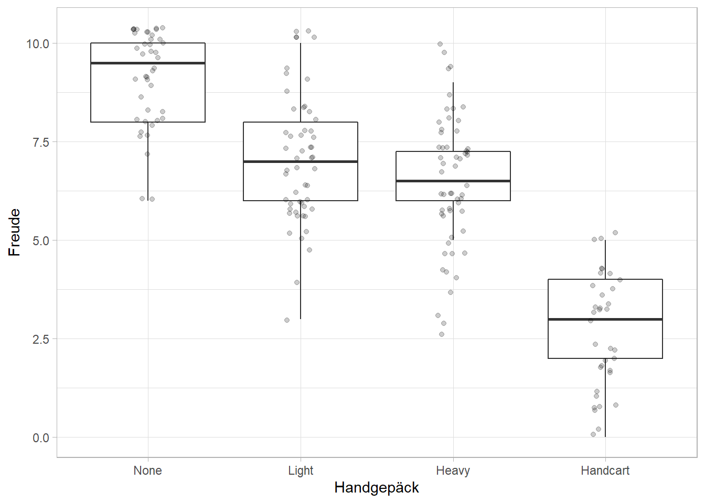
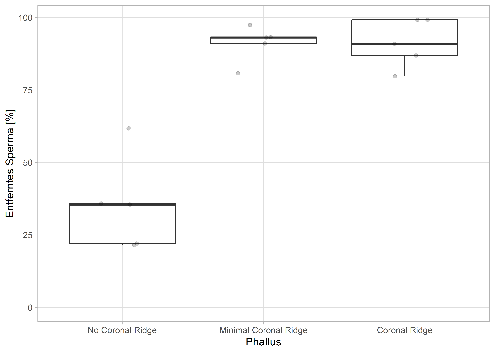

Mit einer einfaktoriellen Varianlzanalyse (ANOVA) kann man die Mittelwerte von mehr als zwei Gruppen miteinander vergleichen. Da die einfaktorielle ANOVA ein Omnibus-Test ist, und so nur anzeigt, ob irgendwo ein signifikanter Unterschied zwischen den betrachteten Mittelwerten besteht, nutzt man entweder Kontraste oder Post-hoc-Tests, um herauszufinden, welche Mittelwerte sich letztendlich signifikant voneinander unterscheiden.
Alle Berechnungen und Abbildungen können wir mit unseren Standardpaketen durchführen. Wir benötigen das tidyverse zum Data Wrangling und zur Visualisierung der Daten. haven benötigen wir für den Import von SPSS-Dateien und rstatix für statistische Analysen.
Begeben wir uns ins Phantasialand in Brühl bei Köln. Auch Forscher brauchen mal Spaß – und wo könnte man sich den besser holen? Natürlich lässt sich das Bestreben nach wissenschaftlichem Fortschritt auch bei Besuchen von Freizeitparks nicht abstellen. So fällt uns beispielsweise auf, dass selbst im Phantasialand, nicht alle Besucher gleich viel Spaß haben. Es gibt sehr viele, die mit lachenden Gesichtern durch den Park laufen, doch auch jene, die ihre Mundwinkel der Schwerkraft hingeben. Woran könnte das liegen? Eine Hypothese könnte doch das Gewicht des Handgepäcks sein. Vielleicht haben Besucher mit wenig Handgepäck mehr Spaß, weil sie weniger zu tragen haben? Wir möchten also untersuchen, ob die Größe des Handgepäcks einen Einfluss auf die Freude der Besucher hat. Dazu haben wir viele Besucher mit vier unterschiedlichen Arten von Handgepäck nach ihrer derzeitigen empfundenen Freude gefragt.
Die Daten dieser kleinen Erhebung sind in der Datei phantasialand.sav. Die Spalte id ist die ID des Besuchers, in der Spalte backpack ist angegeben, mit welchem Handgepäck der Besucher oder die Besucherin unterwegs war. Wir unterscheiden vier Faktorstufen: “None” = kein Handgepäck, “Light” = leichtes, “Heavy” steht für schweres und “Handcart” steht für Bollerwagen. In der Spalte joy wurde die zu dem Zeitpunkt empfundene Freude des Besuchers eingetragen.
phantasialand <- read_spss("data/phantasialand.sav")
phantasialand <- phantasialand %>%
mutate(backpack = as_factor(backpack))
phantasialand## # A tibble: 186 x 3
## id backpack joy
## <chr> <fct> <dbl>
## 1 1 Light 5
## 2 2 Light 7
## 3 3 Handcart 3
## 4 4 Heavy 6
## 5 5 Heavy 3
## 6 6 Heavy 6
## 7 7 Handcart 4
## 8 8 None 10
## 9 9 None 9
## 10 10 Handcart 5
## # ... with 176 more rowsWie immer, wenn wir SPSS-Daten mit vergebenen Werte-Labels importieren, schützt das Paket haven für uns die Information der Levels und der Labels. In der Variable backpack haben wir also direkt nach dem Import sowohl die Levels (Zahlen) als auch die Labels (Bezeichnungen). Wir arbeiten auch hier, wie immer, mit ordentlichen Faktoren weiter und überführen alle Werte dieser Variablen mit der Funktion as_factor() in Faktoren.
Wir haben also vier Grupen, deren Unterschiede in der mittlere Freude wir untersuchen wollen. Dazu nutzen wir eine einfaktorielle Varianzanalyse mit dem Zwischensubjektfaktor “backpack” mit vier Faktorstufen (“None”, “Light”, “Heavy” und “Handcart”) und der abhängigen Variable “joy”.
Es gelten die üblichen Voraussetzungen des GLM.
Auch hier betrachten wir die Daten erstmal, bevor wir irgendwelche Analysen durchführen. Beobachtet man verschiedene Gruppen, macht es Sinn, die Ausgabe der statistischen Kennwerte für jede Gruppe durchzuführen.
## # A tibble: 4 x 14
## backpack variable n min max median q1 q3 iqr mad mean sd
## <fct> <chr> <dbl> <dbl> <dbl> <dbl> <dbl> <dbl> <dbl> <dbl> <dbl> <dbl>
## 1 None joy 42 6 10 9.5 8 10 2 0.741 9.07 1.14
## 2 Light joy 53 3 10 7 6 8 2 1.48 7.06 1.57
## 3 Heavy joy 56 3 10 6.5 6 7.25 1.25 0.741 6.46 1.63
## 4 Handcart joy 35 0 5 3 2 4 2 1.48 2.63 1.40
## # ... with 2 more variables: se <dbl>, ci <dbl>
Wir bekommen den ersten Wind in den Segeln unserer Hypothese. Im Mittel scheinen Besucher des Phantasialands mehr Spaß zu haben, wenn sie weniger Gepäck tragen müssen. Aufgrund der Gruppengröße (jeweils \(n > 30\)) und des zentralen Grenzwertsatzes, müssen wir uns um die Voraussetzung der Normalverteilung keine Gedanken machen. Im Boxplot der Daten sind leicht unterschiedliche Varianzen pro Faktorstufe zu erkennen. Um sicherzugehen, dass wir die Voraussetzung der Varianzhomogenität nicht verletzen, können wir einen Levene-Test berechnen.
## # A tibble: 1 x 4
## df1 df2 statistic p
## <int> <int> <dbl> <dbl>
## 1 3 182 1.36 0.256Da der Levene-Test nicht signifikant ist (\(p = .256\)), gehen wir davon aus, dass sich die Varianzen der Faktorstufen nicht signifikant voneinander unterscheiden. Wir dürfen also eine ganz normale einfaktorielle ANOVA berechnen. Falls sich die Varianzen signifikant voneinander unterscheiden sollten, gibt es bei der einfaktoriellen Varianzanalyse mehrere Aletrnativen (s.u.).
Die eigentliche Durchführung ist kurz und schmerzlos und wird mit der Funktion anova_test() durchgeführt. Wir haben hier zwei Möglichkeiten unser gewünschtes Modell zu definieren. Zum einen können wir es als Regressions-Formel definieren. Dabei steht die abhängige Variable auf der linken Seite und die unabhängige(n) auf der rechten; getrennt durch eine ~ (Tilde). Zum anderen können wir die abhängige und unabhängige Variable direkt als Funktionsargumente angeben. Dieses Vorgehen bietet sich vor allem bei komplexeren Versuchsdesigns an, wie etwa ANOVAs mit Messwiederholungen oder gemischte ANOVAs. Egal, für welche Möglichkeit man sich entscheidet, die Ergebnisse sind immer gleich.
# Formelschreibweise
phantasialand %>%
anova_test(joy ~ backpack)
# Funktionsargumente
phantasialand %>%
anova_test(dv = joy, between = backpack)Ich entscheide mich bei einfachen Designs immer für die Formelschreibweise, weil sie wesentlich schneller getippt ist.
## ANOVA Table (type II tests)
##
## Effect DFn DFd F p p<.05 ges
## 1 backpack 3 182 126.164 3.14e-44 * 0.675Da \(p < .05\) ist das Ergebis signifikant. An dieser Stelle können wir also die Aussage treffen, dass sich die mittlere von den Besuchern empfundene Freude zwischen den Faktorstufen signifikant voneinander unterscheidet. Jetzt haben wir nur ein Problem: Welche Gruppe unterscheidet sich denn von welcher? Die ANOVA ist erstmal nur ein Omnibus-Test, d.h., dass wir eine Aussage darüber treffen, ob sich die Mittelwerte der Gruppen überhaupt irgendwo unterscheiden. Wo genau, dass kann man auf zwei Arten klären:
Post-hoc-Tests setzt man in der Regel ein, wenn man noch keine Hypothese dazu hat, wo die Gruppen sich unterscheiden. Es werden dann, vereinfacht gesagt, alle Gruppen paarweise miteinander verglichen und die \(p\)-Werte auf die Art des jeweiligen Post-hoc-Tests korrigiert. Hat man vorab eine Vermutung darüber, welche Gruppen sich unterscheiden könnten, kann man das vor der Analyse als einen Kontrast festlegen und diesen während der Analyse prüfen lassen.
Einen Überblick über und Empfehlungen zu Einsatzsituationen vieler Post-hoc-Tests gibt Toothaker (1993). Ein guter Post-hoc-Test bei gleich großen Gruppengrößen und angenommener Varianzhomogenität ist der Tukey-HSD (Tukey Honest Significance Difference).
## # A tibble: 6 x 8
## term group1 group2 estimate conf.low conf.high p.adj p.adj.signif
## * <chr> <chr> <chr> <dbl> <dbl> <dbl> <dbl> <chr>
## 1 backpack None Light -2.01 -2.80 -1.23 2.20e- 9 ****
## 2 backpack None Heavy -2.61 -3.39 -1.83 6.93e-14 ****
## 3 backpack None Handcart -6.44 -7.32 -5.57 1.73e-14 ****
## 4 backpack Light Heavy -0.592 -1.32 0.139 1.57e- 1 ns
## 5 backpack Light Handcart -4.43 -5.26 -3.60 1.73e-14 ****
## 6 backpack Heavy Handcart -3.84 -4.66 -3.01 2.01e-14 ****Aus den vielen paarweisen Vergleichen geht hervor, dass sich die Gruppe derer, die ohne Handgepäck unterwegs ist, signifikant von allen anderen Gruppen unterscheidet. Das betrifft auch die Gruppe derjenigen, die mit einem Bollerwagen (“Handcart”) unterwegs sind. Interessant ist, dass sich die Besucher mit leichtem und schwerem Handgepäck nicht signifikant voneinander unterscheiden. Um die ganzen Vergeliche zu durchdringen, nimmt man sich am besten den Boxplot von oben und zeichnet alle signifikanten Unterschiede ein. Man wird dann feststellen, dass wir drei homogene Gruppen haben. In der einen Gruppe sind die Besucher ohne Handgepäck (die glücklichsten), dann kommt die Gruppe derjenigen mit leichtem oder schwerem Handgepäck (etwas weniger glücklich) und “zum Schluss” diejenigen, die einen Bollerwagen ziehen müssen. Die letzte Gruppe hat mit Abstand am wenigsten Freude.
We found the mean experienced joy of visitors of Phantasialand to decrease with increasing weight of backpack. Those with no backpack at all had a mean joy of \(M = 9.07, SD = 1.14\). The mean joy for those with light, heavy backpack, or handcart were \(M = 7.06, SD = 1.57\), \(M = 6.46, SD = 1.63\), and \(M = 2.63, SD = 1.40\) respectively. A one-way revealed the means to differ significantly, \(F(3, 182) = 126.16, p < .001, \eta_G^2 = .675\). Post-hoc Tukey HSD tests revealed three homogeneous subgroups, namely those with no backpacks, those with light and heavy backpacks and those pulling a handcart.
Wenn die Voraussetzung der Varianzhomogenität bei einfaktoriellen Varianzanalysen nicht erfüllt ist, dann kann man, ähnlich wie beim \(t\)-Test, die Freiheitsgrade der \(F\)-Statistik korrigieren. Beim \(t\)-Test hat das der Welch-Test gemacht, hier ist es dann die Welch-ANOVA.
## # A tibble: 1 x 7
## .y. n statistic DFn DFd p method
## * <chr> <int> <dbl> <dbl> <dbl> <dbl> <chr>
## 1 joy 186 159. 3 96.7 2.68e-37 Welch ANOVAHier erhalten wir ebenfalls ein signifikantes Ergebnis (\(F(3, 96.7) = 159, p < .001\)), wodurch wir davon ausgehen können, dass sich die Mittelwerte der Gruppen unterscheiden. Generell sind jedoch Wilcox’ Methoden (s.u.) eine bessere und reliablere Alternative.
Auch für einfaktorielle ANOVAs hat Rand Wilcox (2017) natürlich wieder ein robustes Verfahren entwickelt und im Paket WRS2 (Mair & Wilcox, 2020) implementiert. Die entsprechende Funktion ist für einfaktorielle Varianzanalysen t1way().
## Call:
## t1way(formula = joy ~ backpack, data = phantasialand)
##
## Test statistic: F = 91.2352
## Degrees of freedom 1: 3
## Degrees of freedom 2: 55.94
## p-value: 0
##
## Explanatory measure of effect size: 0.91Wir erhalten ein signifikantes Ergebnis (\(F_t(3, 55.94)= 91.24, p < .001, \xi = .91\)), was uns auch hier wieder sagt, dass sich die Gruppenmittelwerte unterscheiden. Robuste Post-hoc-Tests gibt es natürlich auch wieder; bei einfaktoriellen Varianzanalysen nutzt man die Funktion lincon().
## Call:
## lincon(formula = joy ~ backpack, data = phantasialand)
##
## psihat ci.lower ci.upper p.value
## None vs. Light 2.36830 1.55112 3.18548 0.00000
## None vs. Heavy 2.77828 1.87293 3.68364 0.00000
## None vs. Handcart 6.64103 5.53054 7.75151 0.00000
## Light vs. Heavy 0.40998 -0.44968 1.26964 0.20021
## Light vs. Handcart 4.27273 3.19526 5.35019 0.00000
## Heavy vs. Handcart 3.86275 2.72189 5.00360 0.00000Auch hier sind die Ergebnisse wieder identisch mit der normalen ANOVA. Es besteht zwischen allen Gruppen ein signifikanter Unterschied, außer zwischen den Besuchern mit leichtem oder schwerem Rucksack.
Immer noch gelehrt, aber nicht mehr zur Anwendung gedacht, sind non-parametrische Verfahren, also jene, die keine Annahme bezüglich einer Normalverteilung haben. Ihre Anwendungsgebiete sind eng beschränkt und deshalb sollte man immer robuste Verfahren verwenden. Wer es dennoch falsch machen und sich in vorherige Statistik-Jahzente begeben möchte, der weicht bei einfaktoriellen Varianzanalysen mit kleinen Stichprobengrößen und Abweichungen von der Normalverteilung auf den Kruskal-Wallis-Test (Kruskal & Wallis, 1952) aus.
## # A tibble: 1 x 6
## .y. n statistic df p method
## * <chr> <int> <dbl> <int> <dbl> <chr>
## 1 joy 186 116. 3 6.80e-25 Kruskal-Wallis## # A tibble: 1 x 5
## .y. n effsize method magnitude
## * <chr> <int> <dbl> <chr> <ord>
## 1 joy 186 0.619 eta2[H] largeDer Kruskal-Wallis-Test ist signifikant (\(H(3)=116, p < .001, \eta^2[H] = .62\)) und zeigt uns so einen signifikanten Unterschied der Mittelwerte an. Üblicherweise nutzt man als Post-hoc-Test nach einem signifikanten Kruskal-Wallis-Test die Methode nach Dunn (Dunn, 1964).
## # A tibble: 6 x 9
## .y. group1 group2 n1 n2 statistic p p.adj p.adj.signif
## * <chr> <chr> <chr> <int> <int> <dbl> <dbl> <dbl> <chr>
## 1 joy None Light 42 53 -4.54 5.67e- 6 1.13e- 5 ****
## 2 joy None Heavy 42 56 -5.83 5.69e- 9 2.27e- 8 ****
## 3 joy None Handcart 42 35 -10.7 1.44e-26 8.63e-26 ****
## 4 joy Light Heavy 53 56 -1.31 1.89e- 1 1.89e- 1 ns
## 5 joy Light Handcart 53 35 -6.91 5.01e-12 2.50e-11 ****
## 6 joy Heavy Handcart 56 35 -5.81 6.17e- 9 2.27e- 8 ****Nach dem Dunn-Test finden wir einen signifikanten Unterschied zwischen allen Gruppen, außer zwischen jenen Besuchern mit leichtem und schwerem Rucksack.
Gallup et al. (2003) hatten sehr viel Spaß im Labor als sie untersuchten, ob die Penisform einen evolutionären Vorteil mit sich bringt. Genauer gesagt haben sie sich die Frage gestellt, ob die Form der Eichel als “Sperma-Schieber” funktionieren könnte. Mit einer Eichel, die eine ausgeprägte “Kante” hat, könnte Mann B während des Geschlechtsverkehrs die Hinterlassenschaften von Mann A “rauskratzen” und so relativ mehr von seinem eigenen Sperma zurücklassen. Dafür haben sie sich das Modell einer Vagina und drei Dildos besorgt. In das Vagina-Modell füllten sie künstliches Sperma und penetrierten diese dann mit den drei Dildos. Anschließend haben sie gemessen, wie viel Sperma der Dildo “rausgeschabt” hat. Was man so alles publizieren kann. Die Daten zu ihrer Versuchsreihe finden sich in der Datei gallup.sav und stammen von der begleitenden Website von Field (2018). der Datensatz umfasst zwei Variablen, einmal die Form des Phallus (phallus) mit drei Faktorstufen (“No Coronal Ridge” = keine Eichel-Kante, “Minimal Corona Ridge” = kleine Kante, “Coronal Ridge” = normale Kante) und die Menge an “rausgeschabtem” Sperma (displace).
penis <- read_spss("data/gallup.sav") %>% janitor::clean_names()
penis <- penis %>% mutate_if(is.labelled, as_factor)
penis## # A tibble: 15 x 2
## phallus displace
## <fct> <dbl>
## 1 No Coronal Ridge 21.5
## 2 No Coronal Ridge 35.8
## 3 No Coronal Ridge 61.7
## 4 No Coronal Ridge 22.0
## 5 No Coronal Ridge 35.5
## 6 Minimal Coronal Ridge 93.1
## 7 Minimal Coronal Ridge 80.8
## 8 Minimal Coronal Ridge 91.1
## 9 Minimal Coronal Ridge 97.4
## 10 Minimal Coronal Ridge 93.2
## 11 Coronal Ridge 99.2
## 12 Coronal Ridge 79.7
## 13 Coronal Ridge 91.0
## 14 Coronal Ridge 99.2
## 15 Coronal Ridge 86.9Wir haben insgesamt 15 Beobachtungen und 5 pro Faktorstufe.
## # A tibble: 3 x 14
## phallus variable n min max median q1 q3 iqr mad mean sd
## <fct> <chr> <dbl> <dbl> <dbl> <dbl> <dbl> <dbl> <dbl> <dbl> <dbl> <dbl>
## 1 No Cor~ displace 5 21.5 61.7 35.5 22.0 35.8 13.8 20.0 35.3 16.3
## 2 Minima~ displace 5 80.8 97.4 93.1 91.1 93.2 2.11 3.06 91.1 6.23
## 3 Corona~ displace 5 79.7 99.2 91.0 86.9 99.2 12.3 12.2 91.2 8.35
## # ... with 2 more variables: se <dbl>, ci <dbl>Aufgrund der deskriptiven Statistiken könnten wir vermuten, dass die Form des Phallus tatsächlich einen Einfluss darauf hat, wie viel Sperma aus der Vagina entfernt werden kann. Ein Dildo ohne Eichel-Kante entfernt im Mittel \(M = 35.3, SD = 16.3\) Prozent des enthaltenen Spermas. Die beiden anderen Dildos schaffen beide über 90%. Der Unterschied wird vor allem in der Abbildung schön deutlich.

Da wir relativ wening Datenpunkte haben, sollten wir die Voraussetzungen prüfen.
## # A tibble: 3 x 4
## phallus variable statistic p
## <fct> <chr> <dbl> <dbl>
## 1 No Coronal Ridge displace 0.849 0.190
## 2 Minimal Coronal Ridge displace 0.865 0.246
## 3 Coronal Ridge displace 0.911 0.472## # A tibble: 1 x 4
## df1 df2 statistic p
## <int> <int> <dbl> <dbl>
## 1 2 12 1.15 0.349Beide Tests fallen nicht signifikant aus, was für uns gut ist, da wir die ANOVA nun rechnen dürfen.
## ANOVA Table (type II tests)
##
## Effect DFn DFd F p p<.05 ges
## 1 phallus 2 12 41.559 4.03e-06 * 0.874\(p < .05\) und so können wir festhalten, dass sich die Mittelwerte irgendwo signifikant voneinander unterscheiden. Da wir eine Hypothese darüber haben, welche Gruppen besonders viel oder wenig Sperma entfernen, können wir geplante Kontraste berechnen. Wir vermuten, dass der Dildo ohne Eichel-Kante weniger Sperma entfernt als die Dildos mit Kante. Des Weiteren könnten wir vermuten, dass der Dildo mit normaler Kante mehr Sperma entfernt als der Dildo mit kleiner Kante. Da wir \(k = 3\) Gruppen haben, müssen wir \(3-1 = 2\) Kontraste entsprechend unserer bekannten Regeln definieren.
| Gruppe | Kontrast 1 | Kontrast 2 |
|---|---|---|
| No Ridge | -2 | 0 |
| Minimal Ridge | 1 | -1 |
| Normal Ridge | 1 | 1 |
| Summe | 0 | 0 |
Zu Beginn vergewissern wir uns noch einmal, dass unsere Faktorstufen auch in der gewünschten Reihenfolge sind.
## [1] "No Coronal Ridge" "Minimal Coronal Ridge" "Coronal Ridge"Das sieht gut aus, die Reihenfolge der Faktorstufen ist wie in der Tabelle. Wir können nun unsere gewichte vergeben.
contrast_1 <- c(-2, 1, 1)
contrast_2 <- c(0, -1, 1)
my_contrasts <- cbind(contrast_1, contrast_2)
contrasts(penis$phallus) <- my_contrasts
penis %>%
pull(phallus) %>%
contrasts()## contrast_1 contrast_2
## No Coronal Ridge -2 0
## Minimal Coronal Ridge 1 -1
## Coronal Ridge 1 1Unsere Kontraste sind nun ordentlich hinterlegt und wir können die Analyse durchführen.
##
## Call:
## aov(formula = displace ~ phallus, data = penis)
##
## Residuals:
## Min 1Q Median 3Q Max
## -13.8276 -7.3288 0.1826 4.1917 26.4298
##
## Coefficients:
## Estimate Std. Error t value Pr(>|t|)
## (Intercept) 72.54891 2.88784 25.122 9.60e-12 ***
## phalluscontrast_1 18.61686 2.04201 9.117 9.63e-07 ***
## phalluscontrast_2 0.05679 3.53686 0.016 0.987
## ---
## Signif. codes: 0 '***' 0.001 '**' 0.01 '*' 0.05 '.' 0.1 ' ' 1
##
## Residual standard error: 11.18 on 12 degrees of freedom
## Multiple R-squared: 0.8738, Adjusted R-squared: 0.8528
## F-statistic: 41.56 on 2 and 12 DF, p-value: 4.032e-06Unsere Kontraste bestätigen, was wir uns anhand der Abbildung vielleicht schon gedacht haben. Es gibt im Hinblick auf die Menge des entfernten Spermas einen signifikanten Unterschied zwischen dem Dildo ohne Eichel-Kante und jenen mit einer solchen Kante. Darüber hinaus unterscheiden sich die beiden Dildos mit Eichel-Kante nicht voneinander; beide entfernten ähnlich viel Sperma aus der Modell-Vagina. Die Effektstärke können wir berechnen als \[r_\text{Kontrast} = \sqrt{\dfrac{t^2}{t^2 + df}}\]
Alternativ hätten wir Post-hoc-Tests berechnen können, mit denen wir auf das identische Ergebnis gekommen wären.
## # A tibble: 3 x 8
## term group1 group2 estimate conf.low conf.high p.adj p.adj.signif
## * <chr> <chr> <chr> <dbl> <dbl> <dbl> <dbl> <chr>
## 1 phall~ No Coronal~ Minimal C~ 55.8 36.9 74.7 1.21e-5 ****
## 2 phall~ No Coronal~ Coronal R~ 55.9 37.0 74.8 1.18e-5 ****
## 3 phall~ Minimal Co~ Coronal R~ 0.114 -18.8 19.0 1.00e+0 nsWe found the shape of the phallus to have a significant influence on the amount of displaced sperm, \(F(2,12) = 41.56, p < .001, \eta_G^2 = .874\). A priori defined contrasts revealed a significant difference between phalli with a coronal ridge and those without, \(t(12) = 9.12, p < .001, r_\text{contrast} = 0.93\). If there was a coronal ridge, its size didn’t affect the amount of displaced sperm, \(t(12)=0.02, p = .987, r_\text{contrast} = .005\).
Wären die Voraussetzungen an eine einfaktorielle Varianzanalyse nicht gegeben, z.B. durch kleine Stichprobengröße, gepaart mit signifikanten Shapiro-Wilk-Tests, dann könnten wir auch die vorgestellten robusten Verfahren von Wilcox (2017) verwenden.
## Call:
## t1way(formula = displace ~ phallus, data = penis)
##
## Test statistic: F = 39.5672
## Degrees of freedom 1: 2
## Degrees of freedom 2: 2.81
## p-value: 0.00872
##
## Explanatory measure of effect size: 0.91## Call:
## lincon(formula = displace ~ phallus, data = penis)
##
## psihat ci.lower ci.upper
## No Coronal Ridge vs. Minimal Coronal Ridge -61.33214 -99.06445 -23.59983
## No Coronal Ridge vs. Coronal Ridge -61.26282 -91.61190 -30.91375
## Minimal Coronal Ridge vs. Coronal Ridge 0.06931 -30.82820 30.96683
## p.value
## No Coronal Ridge vs. Minimal Coronal Ridge 0.01728
## No Coronal Ridge vs. Coronal Ridge 0.00528
## Minimal Coronal Ridge vs. Coronal Ridge 0.99045Mit den robusten Tests würden wir auf dasselbe Ergebnis kommen: Es gibt einen signifikanten Unterschied zwischen den Dildos in Bezug auf die durchschnittliche Menge des entfernten Spermas, \(F_t(2, 2.81) = 39.57, p = .009, \xi = .91\). Die Post-hoc-Tests zeigen, dass sich beide Dildos mit Eichel-Kante vom Dildo ohne Kante unterscheiden.
Wie immer rate ich davon ab, non-parametrische Tests zu berechnen, da die robusten Verfahren generell besser und breiter in ihrer Anwendung sind. Der Kruskal-Wallis-Test würde jedoch so durchgeführt.
## # A tibble: 1 x 6
## .y. n statistic df p method
## * <chr> <int> <dbl> <int> <dbl> <chr>
## 1 displace 15 9.38 2 0.00919 Kruskal-Wallis## # A tibble: 1 x 5
## .y. n effsize method magnitude
## * <chr> <int> <dbl> <chr> <ord>
## 1 displace 15 0.615 eta2[H] large## # A tibble: 3 x 9
## .y. group1 group2 n1 n2 statistic p p.adj p.adj.signif
## * <chr> <chr> <chr> <int> <int> <dbl> <dbl> <dbl> <chr>
## 1 displ~ No Corona~ Minimal C~ 5 5 2.69 0.00721 0.0216 *
## 2 displ~ No Corona~ Coronal R~ 5 5 2.62 0.00889 0.0216 *
## 3 displ~ Minimal C~ Coronal R~ 5 5 -0.0707 0.944 0.944 nsAuch der Kruskal-Wallis-Test kommt zu dem Ergebnis, dass sich die Mittelwerte signifikant voneinander unterscheiden, \(H(2) = 9.38, p = .009, \eta^2[H] = .62\). Die Post-hoc-Tests nach Dunn zeigten ebenfalls einen signifikanten Unterschied zwischen den Dildos mit Eichel-Kante und jenem ohne.
Dunn, O. J. (1964). Multiple Comparisons Using Rank Sums. Technometrics, 6(3), 241–252. https://doi.org/10.1080/00401706.1964.10490181
Field, A. P. (2018). Discovering Statistics using IBM SPSS Statistics (5th ed.). SAGE.
Gallup, G., Burch, R. L., Zappieri, M. L., Parvez, R. A., Stockwell, M. L., & Davis, J. A. (2003). The human penis as a semen displacement device. Evolution and Human Behavior, 24(4), 277–289. https://doi.org/10.1016/S1090-5138(03)00016-3
Kruskal, W. H., & Wallis, W. A. (1952). Use of Ranks in One-Criterion Variance Analysis. Journal of the American Statistical Association, 47(260), 583–621. https://doi.org/10.1080/01621459.1952.10483441
Mair, P., & Wilcox, R. R. (2020). Robust statistical methods in R using the WRS2 package. Behavior Research Methods, 52(2), 464–488. https://doi.org/10.3758/s13428-019-01246-w
Toothaker, L. E. (1993). Multiple Comparison Procedures. SAGE.
Wilcox, R. R. (2017). Introduction to Robust Estimation and Hypothesis Testing (4th ed.). Elsevier Academic Press.